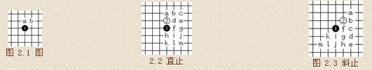
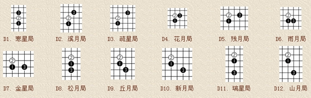
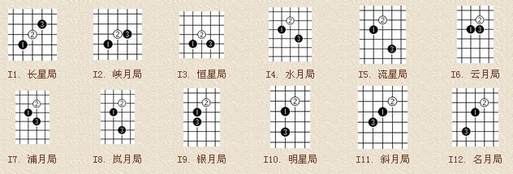
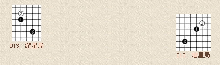

基本定式图示及优势分析
#1 基本定式图示及优势分析 作者：莲子 发表时间：2006-1-16 20:31:28
五子棋的开局是十分重要的。一般情况下，一局五子棋的着数在 20 至 40 着之间，因此，
它的开局阶段是非常短暂的，大约在 7 、 8 着至 10 几着之间。在这一阶段的争夺中，双方
的布局、应答将对以后的胜负起着关键的作用。一般来说，黑棋以攻为主，而白棋则以防为主。 
职业连珠的开局是建立在两套基本打法上的，即“直止 (Direct) 打法 ” 和
“ 斜止 (Indirect) 打法”。如图 2.1 所示，按照职业连珠规则，黑 1 必须落在天元，
如果像民间走法不走天元，则称之为“奇门”。之后，白 2 落子在天元直线侧 a 点
为“直止打法”，落子在天元斜侧 b 点为 “ 斜止打法 ” 。
由这两种打法派生出各 13 种开局，如图 2.2 和图 2.3 所示。每种开局都有
不同的名称，如下各图解：
直止打法开局：

斜止打法开局：

职业连珠指定开局名称繁多，不易记忆。京都五子棋少年队总教练 彭建国 先生编写
的《彭氏口诀》则有助于记住职业开局的名称：
寒星溪月疏星首，花残二月并白莲，雨月金星追黑玉，松丘新宵瑞山腥。
星月长峡恒水流，白莲垂俏云浦岚，黑玉银月倚明星，斜月名月堪称朋。
二十六局先弃二，直指游星斜慧星。
口诀中前四句为直止，五至八句为斜止。将白 2 子比喻为白莲，将黑 1 子比喻为黑玉，
很富有诗意。最后两句所指如下图所示。

在开局阶段，双方主要是二的争夺。双方必须设法创造自己的连二、活二、
跳二或大跳二等，同时要阻挡对方的活二。无论哪种开局，均体现出这一规律。
可以说，哪一方的二做得多 ( 有两个以上的活二 ) ，或者有效地阻挡住对方的活二，
那么，哪一方的胜率就比较大。另外，开局时每一个次序、每一种节奏都不能忽视，
输赢就在一步之差。

#2 Re:基本定式图示及优势分析 作者：neverlandz 发表时间：2006-2-23 0:08:16
好贴，我一直以为五子棋不过是个小游戏而已，没想到门道这么多。
看来需要了解的基础知识非常的多啊
#3 Re:基本定式图示及优势分析 作者：树叶上的阳光 发表时间：2006-3-20 20:06:51
没想到，五子棋还真是很深奥呀，学习 了#4 Re:基本定式图示及优势分析 作者：天屎下饭 发表时间：2006-6-25 10:40:17
是相当深奥啊#5 Re:基本定式图示及优势分析 作者：goodbt 发表时间：2006-6-29 17:02:15
好贴，我一直以为五子棋不过是个小游戏而已，没想到门道这么多。
看来需要了解的基础知识非常的多啊
#6 Re:基本定式图示及优势分析 作者：加州旅馆 发表时间：2006-9-15 22:47:06
光是名字就记不住了啊。。。#7 Re:基本定式图示及优势分析 作者：伯园匪匪在线 发表时间：2006-9-20 12:10:33
这是我入棋社学习的第一篇文章,很有启发.以后要多多学习哦.#8 Re:基本定式图示及优势分析 作者：快乐无忧 发表时间：2006-10-5 17:51:13
谢谢前辈了
#9 Re:基本定式图示及优势分析 作者：789841 发表时间：2006-11-28 18:16:11
最好 是下十几步，都 白子如何 防棋#10 Re:基本定式图示及优势分析 作者：秋天 发表时间：2006-12-5 9:52:32
原来没想到啊，这么多的讲究，看来以前只能算是瞎玩！！#11 Re:基本定式图示及优势分析 作者：voila 发表时间：2006-12-18 23:23:17
很想好好学习学习五子棋哦～～之前都是毫无章法的乱下一气～
不晓得还有这么多奥义在其中呢～～谢谢楼主的扫盲贴哦～～
#12 Re:基本定式图示及优势分析 作者：思过 发表时间：2006-12-20 13:31:26
厉害，要好好学习！#13 Re:基本定式图示及优势分析 作者：txydb 发表时间：2007-1-8 20:49:14
相当深奥啊#14 Re:基本定式图示及优势分析 作者：头发乱了 发表时间：2007-1-11 16:08:59
这里是我这样的菜鸟的乐园!!好好学习,天天向上!
#15 Re:基本定式图示及优势分析 作者：minety 发表时间：2007-1-14 4:44:57
其实我原来不明白这些，现在明白了。原来我最喜欢用的是花月#16 Re:基本定式图示及优势分析 作者：天津刘源 发表时间：2007-1-21 16:39:40
学棋基础啊/.谢楼主了
#17 Re:基本定式图示及优势分析 作者：一滴冰儿 发表时间：2007-2-8 19:15:38
不是说严禁灌水吗?这样的灌法??偶素来学习五子棋的,请各位老师和同学们多多关照
#18 Re:基本定式图示及优势分析 作者：海天涯 发表时间：2007-2-21 11:40:56
十分感谢#19 Re:基本定式图示及优势分析 作者：yekong 发表时间：2007-3-1 23:07:41
真是厉害啊#20 Re:基本定式图示及优势分析 作者：蟒河 发表时间：2007-3-9 22:43:58
东西不错，实战中不知道好不好用。
#21 Re:基本定式图示及优势分析 作者：xyh253 发表时间：2007-4-9 0:34:23
还是不太懂
#22 Re:基本定式图示及优势分析 作者：凤舞九天 发表时间：2007-4-18 9:16:30
瞎玩惯了，今天算是第一次上这些理论课，不过局名太多记不住。#23 Re:基本定式图示及优势分析 作者：风轻颜月 发表时间：2007-4-21 18:59:30
原来开局就有这么多讲究。。。
#24 Re:基本定式图示及优势分析 作者：jackal 发表时间：2007-4-24 16:01:11
受教了,只是还不明白,这些定式,怎么在实战中使用,走完开局,后面怎么用的上?#25 Re:基本定式图示及优势分析 作者：子曰 发表时间：2007-4-27 23:25:42
看来需要学习的东西好多#26 Re:基本定式图示及优势分析 作者：jinfu8 发表时间：2007-5-5 12:35:18
看来每一种棋都有其深奥之处呀,我也没想到小小五子棋会如此道中有道呀!我也是初学者,以后还请各位朋友多多指教呀!我的QQ是120184898#27 Re:基本定式图示及优势分析 作者：洗洗睡吧 发表时间：2007-5-5 21:16:19
谢谢楼主的私有分享～#28 Re:基本定式图示及优势分析 作者：木瓜布丁 发表时间：2007-5-12 20:52:43
是啊,刚在QQ五子棋被别人10子击败,深感这大有文章啊,得好好学习了!!!!!!!!!#29 Re:基本定式图示及优势分析 作者：rapole 发表时间：2007-5-14 16:09:58
晕 这么复杂啊 谢谢
#30 Re:基本定式图示及优势分析 作者：小小学棋之 发表时间：2007-5-20 0:15:29
不错的问章哦１顶#31 Re:基本定式图示及优势分析 作者：挖地瓜 发表时间：2007-5-24 12:11:36
我是新手来报个到#32 Re:基本定式图示及优势分析 作者：无悔 发表时间：2007-5-25 19:14:22
好贴，我一直以为五子棋不过是个小游戏而已，没想到门道这么多。
看来需要了解的基础知识非常的多啊
#33 Re:基本定式图示及优势分析 作者：阿云 发表时间：2007-6-4 16:06:08
确实是好贴啊!
五子棋的玩法还真不少,谢谢!!!
#34 Re:基本定式图示及优势分析 作者：勇敢的飞 发表时间：2007-6-6 20:01:10
奥,真正的受不了呀,前辈们真是前辈
#35 Re:基本定式图示及优势分析 作者：ptjsyj 发表时间：2007-6-8 20:21:58
开局就有26种，很深奥。#36 Re:基本定式图示及优势分析 作者：阿呆 发表时间：2007-6-15 0:19:55
受教了
#37 Re:基本定式图示及优势分析 作者：我想学棋 发表时间：2007-6-16 9:27:41
哈，谢谢了，这下是把开局给看全了
#38 Re:基本定式图示及优势分析 作者：飞鱼 发表时间：2007-6-20 16:26:30
 收下了..
收下了..
#39 Re:基本定式图示及优势分析 作者：飞鱼 发表时间：2007-6-20 16:27:51
我也是新手,请大家多多帮助我，我也很喜欢五子...
#40 Re:基本定式图示及优势分析 作者：木子 发表时间：2007-7-9 16:48:50
五子棋竟然有这么多内涵,以后还要加油加油啊
(虽然我不知道了解这些东西对实战有什么大的帮助)
#41 Re:基本定式图示及优势分析 作者：968714 发表时间：2007-7-10 17:38:56
原来着么深奥啊~！。。要全记住吗？。。实践比真理更重要啊呀！
#42 Re:基本定式图示及优势分析 作者：若尘 发表时间：2007-7-16 22:27:29
也是我入棋社学习的第一篇文章,很有启发.谢谢老师.#43 Re:基本定式图示及优势分析 作者：小小圣隐者 发表时间：2007-7-22 16:50:56
GOOD!
#44 Re:基本定式图示及优势分析 作者：赵立波 发表时间：2007-7-24 13:41:17
很好，就是名字不好记，比围棋难记。#45 Re:基本定式图示及优势分析 作者：zjd 发表时间：2007-7-31 17:44:53

#46 Re:基本定式图示及优势分析 作者：惊人影迷 发表时间：2007-8-1 16:11:32
不错不错
#47 Re:基本定式图示及优势分析 作者：我靠 发表时间：2007-8-2 0:35:41
只记图一点都不难，几秒就几记住了；就是对应的局名不容易记啊，刚学，不知道改怎么办？？？
#48 Re:基本定式图示及优势分析 作者：isy12 发表时间：2007-8-2 9:43:26
我喜欢,原来没看过这些#49 Re:基本定式图示及优势分析 作者：A三无 发表时间：2007-8-8 21:31:09
上面的胜负概率是不是指一打?#50 Re:基本定式图示及优势分析 作者：姑苏斤欠 发表时间：2007-8-25 15:31:08
入学第一篇，我会变强~
#51 Re:基本定式图示及优势分析 作者：飒啦啦 发表时间：2007-8-30 13:07:20
正在认真学习，来到这里才发现我一直在云里雾里呢。
#52 Re:基本定式图示及优势分析 作者：李会 发表时间：2007-9-5 1:44:40
谢谢老师#53 Re:基本定式图示及优势分析 作者：云和大少爷 发表时间：2007-9-19 13:09:23
糊里糊涂几个月,现在有点清楚了#54 Re:基本定式图示及优势分析 作者：效果我 发表时间：2007-9-19 13:39:05
谢谢楼主!
#55 Re:基本定式图示及优势分析 作者：卡卡布拉 发表时间：2007-10-1 21:42:26
原来都是“玩”，现在才知道 原来还有这么多讲究呢啊 ～
呵呵 我常用的开局刚好是评价最高的两种呢～～
好好学习下～
#56 Re:基本定式图示及优势分析 作者：柳文清 发表时间：2007-10-3 7:29:11
原来海域这么些奥秘
#57 Re:基本定式图示及优势分析 作者：如果的事 发表时间：2007-10-3 22:22:07
是啊是啊，那么多得用心记#58 Re:基本定式图示及优势分析 作者：新手老刀 发表时间：2007-10-5 14:49:46
值得研究研究
#59 Re:基本定式图示及优势分析 作者：江苏常州溧阳 发表时间：2007-10-14 22:07:12
好复杂的呀#60 Re:基本定式图示及优势分析 作者：847120 发表时间：2007-10-18 23:16:01
太深奥了，看不懂也~
#61 Re:基本定式图示及优势分析 作者：lmhcx 发表时间：2007-10-19 8:17:45
原来没想到啊，这么多的讲究，看来以前只能算是瞎玩！！#62 Re:基本定式图示及优势分析 作者：陈华 发表时间：2007-11-3 20:14:29
这是我入棋社学习的第一篇文章,很有启发.以后要多多学习哦.#63 Re:基本定式图示及优势分析 作者：云儿 发表时间：2007-11-4 17:30:03
还是不太明白呀?是说先这样开局了,然后下一步呢?#64 Re:基本定式图示及优势分析 作者：lcj680 发表时间：2008-2-29 15:18:06
呵呵，要从基础扎实学起了阿！#65 Re:基本定式图示及优势分析 作者：月下舞剑者 发表时间：2008-3-2 17:40:58
很方便的指导，谢谢了~~~~#66 Re:基本定式图示及优势分析 作者：汪洋孤舟 发表时间：2008-4-24 0:54:39
好贴，我一直以为五子棋不过是个小游戏而已，没想到门道这么多。
看来需要了解的基础知识非常的多啊
#67 Re:基本定式图示及优势分析 作者：旅行者 发表时间：2008-5-12 21:09:36
蛮难记住看耶！
#68 Re:基本定式图示及优势分析 作者：汪洋孤舟 发表时间：2008-6-10 23:47:27
我想转帖，我会注明出处的，呵呵！可以吧……
#69 Re:基本定式图示及优势分析 作者：是棋 发表时间：2008-6-14 21:43:24
真深奥,受教了#70 Re:基本定式图示及优势分析 作者：暮雨迟 发表时间：2008-6-15 5:45:26
还有没有更简单易记的方法啊？ 这么长还是记不住。
这么长还是记不住。
#71 Re:基本定式图示及优势分析 作者：叵 发表时间：2008-9-8 22:19:02
学习#72 Re:基本定式图示及优势分析 作者：朝聖者 发表时间：2008-10-23 20:58:21
哈哈 我原来以为 …… 我现在以为…… 不如说我一直晓得 五子何止五个棋子那么简单`` 那可是我人生的第二个老师 不会象有些人说的幼稚游戏那么肤浅 还有很开心有人一语惊醒众人 只能说阶段不同领悟不同
#73 Re:基本定式图示及优势分析 作者：香雪美景 发表时间：2008-11-3 8:53:03
不错,真是太好了#74 Re:基本定式图示及优势分析 作者：沙漠中的骆驼 发表时间：2008-11-22 10:50:07
以前玩的时候是瞎玩，
不过仔细想一想自己的走法，
在不知不觉之中也符合上面的规律呢。收藏了！
#75 Re:基本定式图示及优势分析 作者：皇上 发表时间：2008-12-20 22:10:23
用心了，值得研究#76 Re:基本定式图示及优势分析 作者：缘来 发表时间：2008-12-24 20:03:23
不顶不行啊。。。。。。。。。。肯定下了不少功夫，，，，，
#77 Re:基本定式图示及优势分析 作者：淡陌 发表时间：2009-3-5 12:09:52
谢谢。要好好的学习下。感觉越来越有趣了。
#78 Re:基本定式图示及优势分析 作者：亦可 发表时间：2009-7-23 11:50:41
谢谢#79 Re:基本定式图示及优势分析 作者：星博 发表时间：2009-10-7 20:34:49
做什么都是有门道的，外行只是看热闹。#80 Re:基本定式图示及优势分析 作者：通尼 发表时间：2009-10-19 14:27:32
好东西呀，学习！谢谢！#81 Re:基本定式图示及优势分析 作者：神秘幽灵 发表时间：2009-11-12 20:09:24
hao深奥哦#82 Re:基本定式图示及优势分析 作者：神秘幽灵 发表时间：2009-11-12 21:34:13
很深奥
#83 Re:基本定式图示及优势分析 作者：双鱼的男生 发表时间：2009-11-27 10:24:12
好东西，背下来再说
#84 Re:基本定式图示及优势分析 作者：莫金容 发表时间：2009-12-12 14:43:03
非常好
#85 Re:基本定式图示及优势分析 作者：小帮帮 发表时间：2009-12-13 17:06:31
不发表看法
#86 Re:基本定式图示及优势分析 作者：江右行人 发表时间：2009-12-13 20:50:12
学习#87 Re:基本定式图示及优势分析 作者：五子米猫 发表时间：2010-11-16 23:46:31
谢谢提供 学习了#88 Re:基本定式图示及优势分析 作者：江湖游侠 发表时间：2011-5-26 19:37:49
支持，正在学习中，不过估计水平这就那样了，希望能提高#89 Re:基本定式图示及优势分析 作者：灯塔连珠 发表时间：2011-5-27 9:12:42
这是好几年前的结论了，随着时间的推移，好多开局体系也发生的不同大小的变化，对于各种开局体系也有了新的认知，新手学习时要灵活掌握。#90 Re:基本定式图示及优势分析 作者：冰玉 发表时间：2012-1-6 8:54:11
这个东西越了解越喜欢啊！
#91 Re:基本定式图示及优势分析 作者：开心下棋 发表时间：2012-2-27 14:20:32
学习了，待细细研究#92 Re:基本定式图示及优势分析 作者：五子棋来吧走吧 发表时间：2014-2-2 17:13:19
#93 Re:基本定式图示及优势分析 作者：五子棋来吧走吧 发表时间：2014-2-2 17:15:22